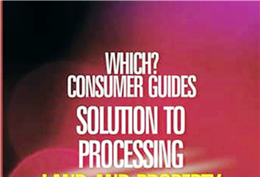

Book
Solution to Processing Land & Property Documents in Lagos State
A comprehensive, citizen-focused guide navigating bureaucracy and legal frameworks for securing property rights in Lagos.
Read Excerpt|
Publisher & Editor of Urban Express News. Author of the definitive Land & Property Documents in Lagos State guide. Shaping Nigeria's urban narrative through journalism, planning, and advocacy.
From front-page investigations to urban policy analysis — every piece crafted with precision, purpose, and the pursuit of truth.

A comprehensive, citizen-focused guide navigating bureaucracy and legal frameworks for securing property rights in Lagos.
Read ExcerptAn investigative report revealing how redevelopment projects displace long-term residents without adequate consultation or compensation.
Read on Urban Express ↗Amplifying marginalized transportation workers through storytelling, policy advocacy, and community organizing across Lagos.
Learn MoreAs Publisher and Editor-in-Chief of Urban Express News, Olusegun leads a platform dedicated to investigative reporting, urban development insights, and social justice storytelling reaching hundreds of thousands of Nigerians.
A landmark policy shift promises greater community consultation and sustainable development practices across high-density Lagos neighbourhoods.